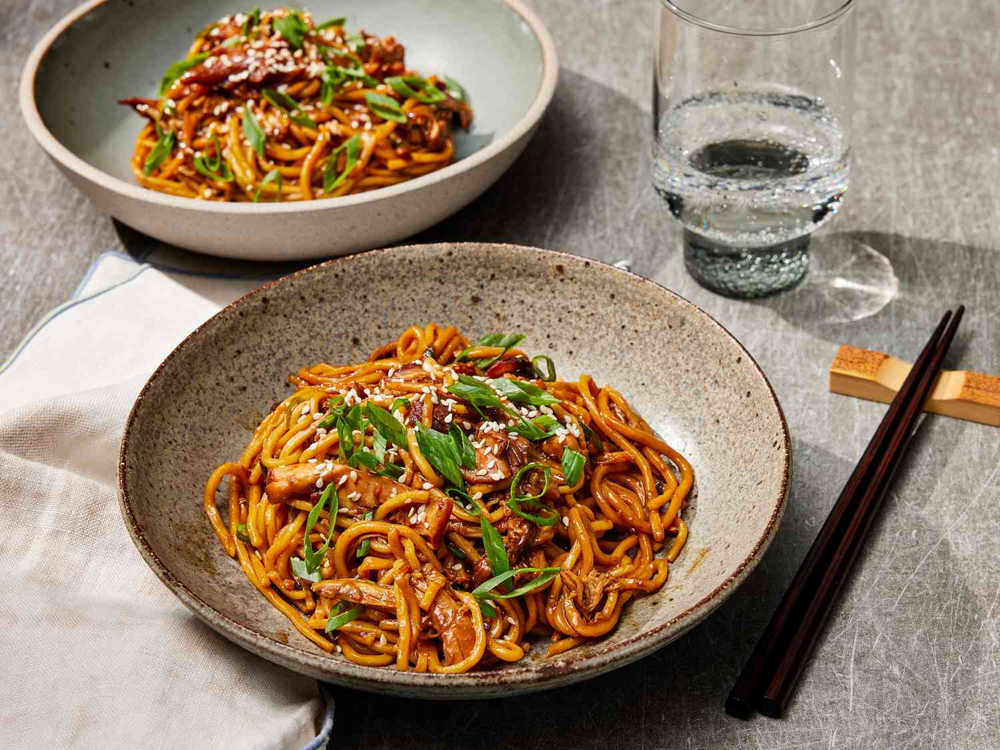

Slow Cooker Honey Garlic Chicken Noodles

Description
“Umami noodles that you can set and forget? It’s perfect!” said recipe tester Amanda Stanfield.
This slow cooker recipe simmers flavorful chicken thighs to sweet and savory perfection. Toss in soft, springy noodles, and you get a
bowl full of rich, belly-warming comfort the whole family will enjoy. Hey, just because the flavors are complex doesn’t mean the cooking process has to be.
Ingredients
- 1/3 cup honey
- 1/4 cup lower-sodium soy sauce
- 6 medium garlic cloves
- 2 tbsp regular soy sauce
- 2 tbsp oyster sauce
- 1 tbsp Sriracha sauce
- 1 tbsp Shaoxing wine
- 2 tsp grated fresh ginger
- 2 tsp toasted sesame oil
- 1/2 tsp kosher salt
- 1 1/2 lbs boneless, skinless chicken thighs
- 2 tbsp water
- 1 tbsp cornstarch
- 16 oz lo mein noodles, cooked
- 3 large scallions thinly sliced, plus more for garnish
- white sesame seeds
Steps
- Stir together honey, soy sauce, garlic, dark soy sauce, oyster sauce, Sriracha, Shaoxing wine, ginger, sesame oil, and
salt in a 6-quart slow cooker. Place chicken thighs in a single layer into the honey mixture.
- Cover and cook until chicken is tender, about 3 hrs on HIGH and 5 hrs on LOW
- Stir together water and cornstarch in a small bowl until smooth. Transfer chicken
from the slow cooker to a cutting board and shred with a fork.
- With slow cooker on HIGH, stir in cornstarch mixture until slightly thickened, about
30 seconds. Turn off slow cooker. Return shredded chicken to slow cooker along with cooked
noodles and scallions; toss to coat.
- Divide noodle mixture evenly among 6 serving bowls and garnish with scallions and sesame seeds.